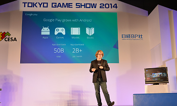
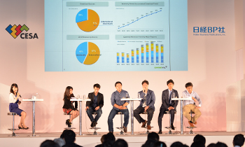
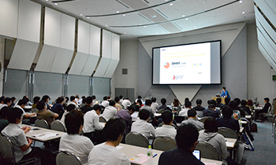
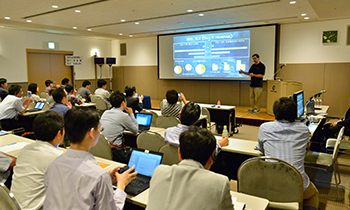

初めてのTGS ～ビジネスデイ編～

※TGS2014の写真で会場の様子や雰囲気を事前に把握しておきましょう。ただしTGS2015は、TGS2014と必ずしも同じではありませんので写真はイメージとしてご覧ください。
「TGSフォーラム」に関連して知っておきたいこと
「TGSフォーラム 基調講演」（無料）の参加方法
ビジネスデイの初日、9月17日（木）10時30分から、１ホールのイベントステージにて「基調講演」を開催します。
入場は無料で、当日受付もできますが（名刺が必要となります）、Webで事前申込をした方が優先されます。確実に聴講を希望する方は、事前申込をオススメします（事前申込は「TGSフォーラム2015」のページへ）。
事前申込をした方は、申込完了メールに添付されている「TGSフォーラム受講券」（A４サイズ）のプリントアウトを必ずご持参ください。
なお、「基調講演」は、東京ゲームショウの入場受付をしていなくても聴講できます。東京ゲームショウの入場受付をする時間がない場合は、直接、1-8ホール2階コンコース1ホール入口からご入場いただき、イベントステージの「基調講演」受付までお越しください。
ただし、そのままでは東京ゲームショウ展示会場にはご入場いただけませんので、「基調講演」聴講後、東京ゲームショウの入場受付を行ってください。


「TGSフォーラム アジア・ゲーム・ビジネス・サミット 2015」（無料）の参加方法
ビジネスデイの初日、9月17日（木）午後13時30分から、1ホールのイベントステージにて「アジア・ゲーム・ビジネス・サミット 2015」を開催します。
今年は、中国と日本のゲーム会社のトップが集まり、国境を越えて広がるゲームビジネスの課題や展望を語り合います。
入場は無料で、当日受付もできますが（名刺が必要です）、Webで事前申込した方が優先されます。確実に聴講を希望する方は、事前申込をオススメします（申し込みは「TGSフォーラム2015」のページへ）。
事前申込をした方は、申込完了メールに添付されている「TGSフォーラム受講券」（A４サイズ）のプリントアウトを必ずご持参ください。
なお、「アジア・ゲーム・ビジネス・サミット 2015」は、東京ゲームショウの入場受付をしていなくても聴講できます。東京ゲームショウの入場受付をする時間がない場合は、直接、1-8ホール２階コンコース１ホール入口からご入場いただき、イベントステージの「アジア・ゲーム・ビジネス・サミット 2015」受付までお越しください。

ただし、そのままでは東京ゲームショウ展示会場にはご入場いただけませんので、「アジア・ゲーム・ビジネス・サミット 2015」聴講後、東京ゲームショウの入場受付を行ってください。
「TGSフォーラム 専門セッション」（有料）／「TGSフォーラム スポンサーシップセッション」（無料）の参加方法
ビジネスデイの2日目、9月18日（金）午後に、ゲーム業界の最新事情が分かる「TGSフォーラム 専門セッション」（有料）、「TGSフォーラム スポンサーシップセッション」（無料）を、国際会議場で開催します。事前申込の方法は、「TGSフォーラム2015」のページをご参照ください。
当日受付もできますが、満席の可能性もありますので、確実に聴講を希望する方は、事前申込をオススメします。
事前申込した方は、申込完了メールに添付されている「TGSフォーラム受講券」（A4サイズ）のプリントアウトと名刺を必ずご持参ください。
「TGSフォーラム専門セッション」（有料）にお申し込みの方の展示会場への入場方法はコチラ



2002-2015 CESA / Nikkei Business Publications, Inc. All rights reserved.